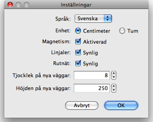

För att ändra inställningarna för Sweet Home 3D väljer du Sweet Home 3D > Inställningar... under Mac OS X eller Arkiv > Inställningar... under andra operativsystem.

I inställningsrutan kan du välja vilket Språk som används i Sweet Home 3D:s användargränssnitt och vilken Enhet som används när du ritar hemmet, på planlösningens linjaler och rutnät, samt på längder som visas.
Kryssrutan Magnetism slår av eller på magnetismen som används i planlösningen när man ritar väggar och placerar ut möbler.
Kryssrutan Linjaler visar eller tar bort linjalerna runt planlösningens ruta.
Kryssrutan Rutnät visar eller tar bort rutnätet i planlösningen.
Fältet Tjocklek på nya väggar ställer in tjockleken på nya väggar och gäller från och med när inställningsrutan stängs.
Fältet Höjden på nya väggar ställer in höjden på nya väggar och gäller från och med när inställningsrutan stängs.
|